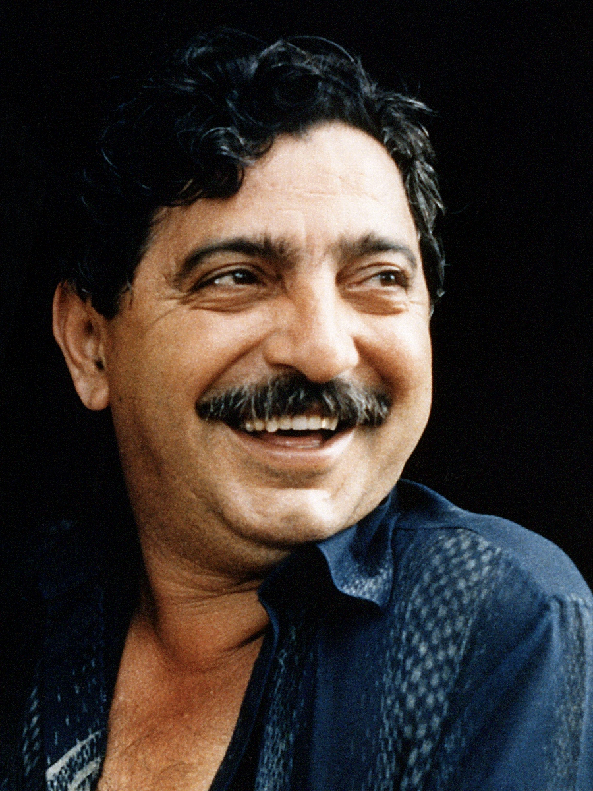

Ativismo
Em todo o mundo, indivíduos lideram a luta contra as mudanças climáticas, apelando a seus governos e empresas para que tomem medidas para proteger o nosso planeta e garantir que todos tenhamos um lugar seguro para chamar de lar. Desde pedir a governos e empresas que façam a sua parte até greves escolares, até iniciativas de base como o plantio de árvores e sistemas inovadores de reciclagem.
Greta Thunberg
Figura global e nome-chave no debate sobre o clima. O que começou como um protesto solitário em frente à sua escola, agora se transformou em uma greve escolar internacional, a Fridays for Future, que envolve milhões de pessoas em todo o mundo. Além disso, em 2019, ela atravessou o Atlântico para participar da conferência climática da ONU. Mais tarde naquele ano, ela foi coroada Personalidade do Ano pela revista Time.
Ecaterina Lutisina
Ecaterina é uma ativista de 31 anos radicada na Moldávia. Ela defende a saúde mental, os direitos dos animais e a crise climática. Após um longo envolvimento com o movimento climático, ela foi cofundadora da Extinction Rebellion Branch na Moldávia. Nos últimos anos, eles organizaram protestos, palestras, flash mobs e iniciativas de plantio de árvores para mobilizar a população moldava em prol do clima.
Francisco Alves Mendes Filho (Chico Mendes)
Chico Mendes defendeu a preservação da floresta amazônica, os direitos dos seringueiros e dos povos da floresta, e a criação de reservas extrativistas. Ele lutava contra o desmatamento, a grilagem de terras e a exploração predatória dos recursos naturais, que ameaçavam a vida dos habitantes locais e a biodiversidade.
Rachel Carson
Mulher e cientista num mundo masculino, seus primeiros trabalhos foram assinados como R.L. Carson para não revelar sua condição feminina e, consequentemente, atrair descrédito às suas pesquisas. Rachel anteviu, já nos anos 50, questões cruciais que se fazem presentes até hoje. Ela foi a primeira cientista a constatar que o uso de pesticidas agrícolas atinge todo o ecossistema (solo, águas, fauna e flora), entra na cadeia alimentar e termina por chegar às nossas mesas. “Primavera Silenciosa”, seu livro, provocou grande repercussão, quer no campo científico, quer no campo da ética e da política. Na época, o DDT era visto como um avanço tecnológico, sendo amplamente utilizado em lavouras, hortas e jardins nos Estados Unidos. O pioneirismo da autora custou-lhe uma perseguição implacável e uma campanha difamatória por parte dos fabricantes e usuários de DDT nos EUA.
Soluções e Ações
Energias limpas
Muitas das atividades humanas atuais utilizam energia e a maior parte dessa energia provém da queima de combustíveis fósseis. No mundo, a principal fonte de geração de energia elétrica é o carvão. No transporte, a energia para movimentar os veículos vem, principalmente, da queima de gasolina e óleo diesel. Na indústria, utiliza-se muito o gás natural e outros derivados de petróleo como o óleo combustível. Toda essa queima de combustíveis fósseis emite grande quantidade de GEE (Gases do Efeito Estufa) para a atmosfera. No Brasil, as emissões de GEE estão mais relacionadas à mudança no uso da terra (desmatamento e queimadas). A agropecuária aparece em segundo lugar e em seguida a energia.
Além de combater o desmatamento e as queimadas, a solução passa pela adoção de tecnologias que possam minimizar as emissões de GEE para a atmosfera, inclusive pela substituição dos combustíveis fósseis por outras fontes energéticas. O grande desafio é o fato de nossa sociedade ser muito dependente de energia. Usamos em tudo: na nossa casa, nas escolas, nos escritórios, nos carros, nos ônibus, aviões, empresas e indústrias. Diante disso, representantes eleitos pela sociedade, empresas e universidades estão buscando formas alternativas de energia que não contribuam para as emissões de GEE. Nós também podemos fazer a nossa parte, repensando nossos hábitos culturais e de consumo.
O consumidor acostumou-se a usar a energia sem ao menos pensar em como ela é gerada, seus impactos ambientais e, muito menos, levando em conta que ela precisa ser usada de forma consciente e eficiente. No Brasil, a maior parte da energia elétrica que consumimos é gerada em usinas hidrelétricas, que é uma fonte de energia renovável e com baixas emissões de GEE. Isso faz com que nossa matriz elétrica emita pouco GEE comparada com a de outros países. Porém, como as hidrelétricas dependem de chuva para que os rios tenham água suficiente para movimentar as turbinas, em períodos de pouca chuva, é necessário acionar termelétricas movidas a combustíveis fósseis para não faltar energia. O acionamento de termelétricas encarece nossas contas de luz e aumenta nossas emissões de gases de estufa (como você viu em Fontes de Energia: Energia Hidráulica - Bandeiras Tarifárias).
Reflorestamento
As florestas são essenciais para a regulação do clima global. Áreas florestadas ajudam a absorver dióxido de carbono (CO₂) da atmosfera e liberam oxigênio. Quanto maior a área de cobertura florestal, maior a quantidade de CO₂ capturada, o que ajuda a reduzir a concentração de gases de efeito estufa que retêm calor e intensificam o aquecimento global. As queimadas globais de 2023 liberaram aproximadamente 6,5 bilhões de toneladas de CO₂, com destaque para as emissões na Amazônia, onde incêndios entre julho e setembro emitiram 45 megatoneladas, evidenciando o grave impacto ambiental e o papel das queimadas na intensificação das mudanças.
A destruição de florestas não só elimina essa capacidade de absorção, mas também libera o carbono armazenado no solo e nas árvores de volta para a atmosfera. Esse processo amplifica os efeitos climáticos que já estão sendo sentidos em escala global, como aumento das temperaturas, alterações nos padrões de chuva e fenômenos climáticos mais intensos.
Para que o reflorestamento seja eficaz, ele não precisa ocorrer apenas em grandes áreas. Pequenas iniciativas, feitas por indivíduos, comunidades e empresas, podem somar esforços para aumentar a cobertura verde e contribuir significativamente para a redução do carbono atmosférico. Um exemplo dessa ação: Plantar uma muda em áreas urbanas ou rurais. O plantio de árvores pode ocorrer tanto em ambientes urbanos quanto rurais. Em cidades, as árvores ajudam a combater o fenômeno de “ilhas de calor”, reduzem a poluição do ar e proporcionam espaços de lazer. No campo, elas ajudam a recuperar solos degradados, melhorando a produtividade agrícola e protegendo a biodiversidade.
Além de reduzir o CO₂ da atmosfera, o reflorestamento traz outros benefícios importantes para a saúde do planeta e da sociedade: Preservação da biodiversidade: As florestas são habitat para inúmeras espécies animais e vegetais. O reflorestamento ajuda a manter esses ecossistemas e protege espécies ameaçadas pela perda de habitat. Proteção dos recursos hídricos: Árvores desempenham um papel crucial no ciclo da água, ajudando na absorção e filtragem da água das chuvas e reduzindo a erosão do solo. Florestas saudáveis contribuem para a manutenção dos mananciais hídricos, essenciais para o abastecimento das comunidades.
Acordo de Paris
O Acordo de Paris é um tratado internacional que vincula juridicamente os seus signatários a agirem para combater as alterações climáticas. Em 2015, pela primeira vez na história, os governos acordaram conjuntamente em unir esforços para limitar o aquecimento global e fazer face aos seus impactos.
O acordo entrou em vigor a 4 de novembro de 2016, uma vez cumprida a condição de ratificação por, pelo menos, 55 países que representassem no mínimo 55 % das emissões mundiais de gases com efeito de estufa.
O acordo de Paris tem como principais pontos:
• Objetivo
a longo prazo: O aumento da temperatura média mundial não deve
exceder 1,5° C até ao final do século.
• Ambição: Os
governos apresentam os seus planos de ação de cinco em cinco anos,
estabelecendo cada plano metas cada vez mais ambiciosas.
• Solidariedade: É necessário um financiamento da ação
climática para ajudar os países vulneráveis a reduzirem as emissões
e a criarem resiliência face às alterações climáticas.
•
Contributos: Os países comprometem-se com a ação climática,
apresentando planos de ação para o clima, a fim de reduzirem as suas
emissões.
• Transparência: Os países apresentam
relatórios aos outros países e ao público sobre o seu desempenho no
alcance das suas metas, a fim de assegurar a transparência e a
supervisão.